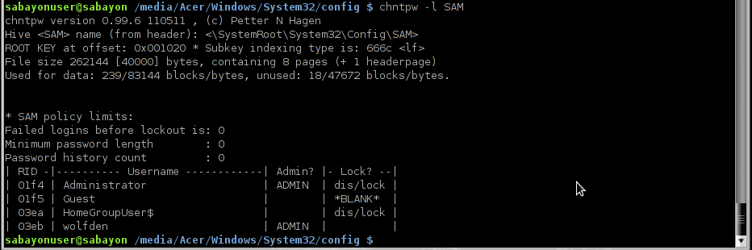
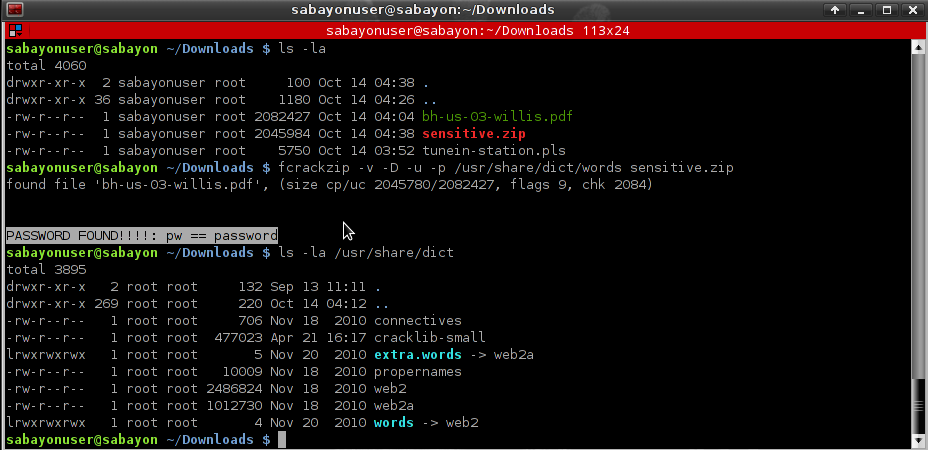
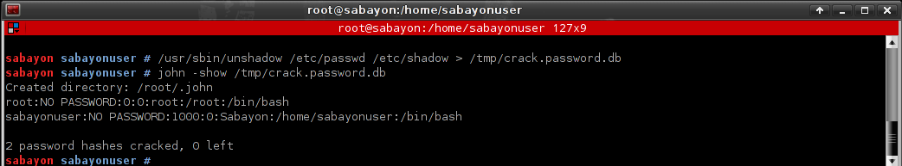
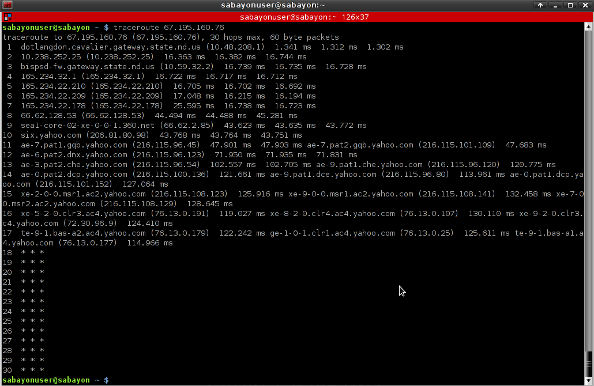
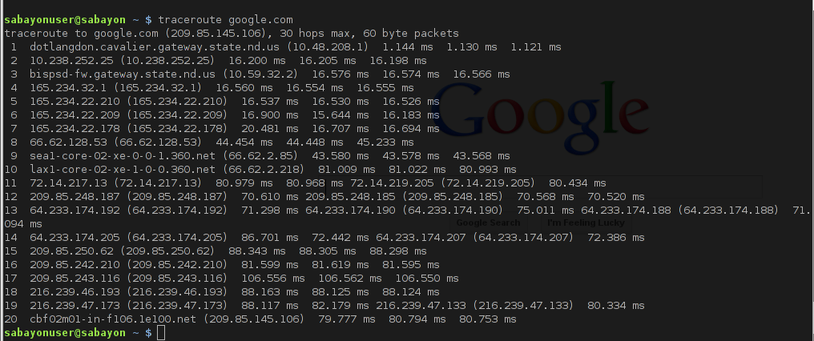

Sabayon Forensics
A Sabayon Linux Spin


A Sabayon Linux Spin
USB Drive to boot computers for access
Scan and Clean infected computers
Networking tools and Communication
A fully usable and installable operating system
It is geared to gain access to a computer to scan and retrieve any and all information. It will allow you to do:

Spin Project
Based
Desktop
You can find other mirrors on the official sabayon mirrors page, just have to look in the daily folder to find the isos.
All Images are 64 bit
Brazil: Universidade Federal Do Paranà
Some of the Tools Available in Action
There is two accounts, root account and sabayonuser account. There is no password for either account, so if you get asked for a password, just hit enter. For instance, when you need to su to the root account, you will get prompt for a password, just hit enter. So in terminal:
sabayonuser@sabayon ~ $ su
Password:
sabayon sabayonuser #
Note the #, this represent that you have successfully changed to root account.
If you have an issue(s), suggestion(s) or question(s) on Sabayon Forensics, please feel free to contact me at wolfden@sabayon.org. I’m usually pretty good at responding quickly, weekends can be a bit slower as I like to get away from the computer too. Please make sure you are always running the latest release. Please provide as much information as possible and how to reproduce the issue(s).
This applies to the general public. I will not teach or answer any emails asking how to crack/hack. Using the operating system and software for other means is not tolerated. Using the software in malicious behavior can and will get you into legal trouble. This is the first, last and final warning on that subject.
Currently it's being released once a week keep up with software updates. Do you need to download it every week? No of course not, update to a new version when ever you want. If you find one buggy, grab the next release to see if it works better.
Quick Tutorials
chntpw is a software utility for resetting or blanking local passwords used by Windows. The SAM file can be found at c:/Windows/System32/config or c:/Winnt/System32/config
cd to proper directory
chntpw -l SAM This will list all users in the SAM file
chntpw SAM This will automatically change the administrator account
chntpw -u USERNAME SAM This will change a specific username password

Clam AntiVirus is an open source (GPL) anti-virus toolkit for UNIX, designed especially for e-mail scanning on mail gateways. It provides a number of utilities including a flexible and scalable multi-threaded daemon, a command line scanner and advanced tool for automatic database updates.
To update the virus definitions, simple run as root: freshclam
Other Usage with clamscan:
Scan a single file:
clamscan file
Scan a current working directory:
clamscan
Scan all files and subdirectories:
clamscan -r /directory
Scan all files and subdirectories, make a log of infected files, move infected to a location:
clamscan -ir /directory -l /var/log/clamscan.log -move=/tmp/virus
Ophcrack can be installed on the live system via the package manager. equo update && equo install ophcrack –nodeps I have choosen to leave ophcrack off the live for various reasons, maily due to the tables and their sizes. I suggest downloading the tables and storing them on usb sticks or dvd discs and than loading them with ophcrack.
fcrackzip is a zip password cracker, similar to fzc, zipcrack and others. If you run into a zip file that is password protected, this guy works pretty well.
Lets say you download a zip file called sensitive.zip. You will want to run the dictionary against it:
frackzip -v -D -u -p /usr/share/dict/words sensitive.zip
You can see a list of available dictionaries with ls -la /usr/share/dict

John the Ripper is a fast password cracker, currently available for many flavors of Unix, Windows, DOS, BeOS, and OpenVMS. Its primary purpose is to detect weak Unix passwords. Besides several crypt(3) password hash types most commonly found on various Unix systems, supported out of the box are Windows LM hashes, plus many more with contributed patches.

Traceroute tracks the route packets taken from an IP network on their way to a given host. It utilizes the IP protocol's time to live (TTL) field and attempts to elicit an ICMP TIME_EXCEEDED response from each gateway along the path to the host. See traceroute in the manual of your system for more info.
Can see here an IP traced to yahoo

Can see here a trace of google and than using the IP found pulls up google
